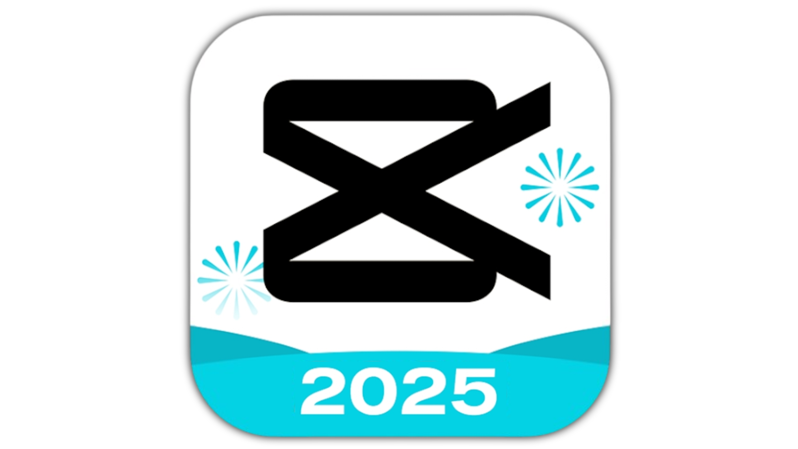

CapCut MOD APK v14.6.0 – Editor de Video Premium Gratis
1 CapCut MOD APK v14.6.0 es una versión modificada del popular editor de video CapCut, diseñado para ofrecer una experiencia de edición avanzada sin restricciones. Con esta versión, los usuarios pueden disfrutar de todas las funciones premium desbloqueadas, incluyendo efectos exclusivos, herramientas profesionales de edición, eliminación de marcas de agua y una interfaz libre de anuncios. CapCut ha ganado gran popularidad entre creadores de contenido, influencers y usuarios de redes sociales gracias a su combinación perfecta de potencia y facilidad de uso. Esta versión MOD v14.6.0 lleva esa experiencia al siguiente nivel, permitiéndote editar como un profesional desde tu teléfono Android.
Ya sea que estés creando vídeos para TikTok, YouTube, Instagram o cualquier otra plataforma, CapCut MOD te brinda todas las herramientas que necesitas: corte y empalme preciso, transiciones suaves, efectos de cámara lenta, filtros de nivel cinematográfico, texto animado, y mucho más. Lo mejor de todo: no necesitas suscripción ni pagos adicionales. Solo descarga, instala y comienza a crear.